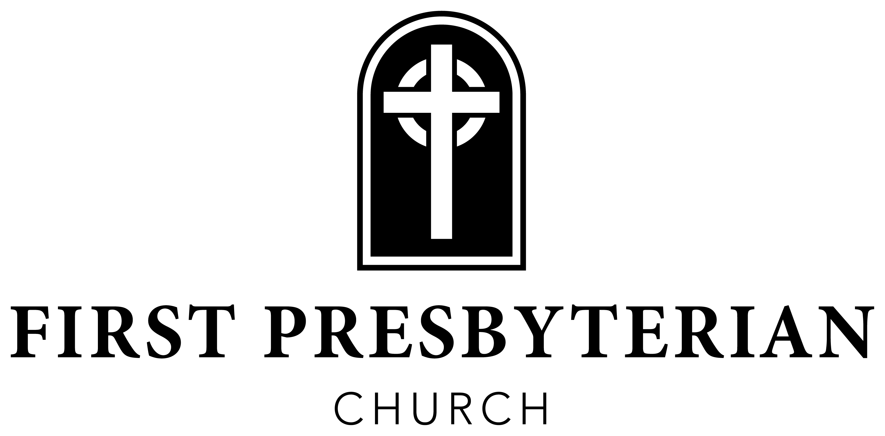

The flowers adorning the sanctuary today are given in honor of Emma & Will Verdung in celebration of their marriage on November 21, 2026. Ken & Edi Williams
The Red Rose. The Red Rose welcomes Mary Ellon McCalla, born November 13, 2026, to Hunter and Anna McCalla.
Hanging of the Greens. Come join us at 5 p.m. in the sanctuary for fun and fellowship as we decorate the church for Christmas. Bring your children, as we have lots of fun planned for them as well.
Assisting Elder — Dr. Mark Mazurkiewicz
Greeters — Bobby & Christy Burns
Acolytes — Madelyn Butler & Kathryn Moore
Circle of Prayer — Dave Shanklin & Becky Stewart
Children’s Church — Jason & Jennifer LeGoff
AV Engineer — Russell Smith
Ushers — Scott Sawyer, Holland Yeates, Ben Long, & Josh McCahill
Nursery — BJ Mazurkiewicz, Laura Kate Carmichiel, Katy Stanley, Penny Long, Suzanne Davis, Terre Smith, Abbie Butler, & Courtney Taylor
Rev. Waring Porter - Pastor
Gregg Parker - Dir. of Discipleship
Bobby Capps - Dir. of Outreach & Care
Jennifer Shipp - Dir. of Student Ministries
Laura Kate Carmichiel - Dir. of Women’s Min. & Comm.
Phyllis Sellers - Day School Director
Jan Pike - Choir Director
Malechi Doren - Accompanist
Teresa Tsagarakis - Administrative Assistant
Sammy Allred - Bookkeeper
November 22 Hanging of the Greens, 5 p.m.
November 24 Messy Bible Study, 8 a.m.
November 25 Kids Quest · Youth House
November 26 37th Community Thanksgiving Meal
Scan to give online
919 East Shiloh Rd · Corinth, MS 38834 · fpccorinth.org · 662-286-6638

November 22, 2026
Twenty-sixth Sunday after Pentecost
“To be disciples, to make disciples”
We are honored that you decided to join us this morning. Whether it is your first time in church, your first time in a long while, or part of your regular rhythm, we hope you will be encouraged by the fellowship with each other, and with our Lord, as we worship him together.
If this is your first time with us, please take a moment and fill out a Next Steps Card found on the back of the pew, or scan the QR code and submit it on your phone. We would love to meet you and help you get connected.
Children (age 4+) and their families worship together in the sanctuary, where children will be dismissed to Children’s Church during the service. Children’s bulletins and crayons are available at both entrances to the Sanctuary. Children are always welcome in worship!
Nursery rooms for infants through age 3 are in the Education Wing, with the entrance behind the playground on the west side of campus. If you have a newborn and/or are nursing your baby, please feel free to use our baby room just off the narthex — a quiet space with comfortable seating where the worship service is broadcast as well.
Our vision is to see lives transformed by the power of the gospel, rooted in God’s Word and the Reformed tradition, in order to create a culture of discipleship at FPC where disciples WORSHIP holistically, GROW relationally in Christ, and SERVE boldly in the world for the glory of God. Our mission is to accomplish this by “Being Disciples and Making Disciples.”
Website: fpccorinth.org
Phone: 662-286-6638
Address: 919 East Shiloh Rd, Corinth, MS 38834
“Spiritual Renewal: Resting in the Lord”
Rev. Waring Porter · Nehemiah 4
In Nehemiah 4, we discover the moment God’s people begin making progress in their mission, opposition begins to intensify. As we have established, the rebuilding of Jerusalem was more than a construction project, it was part of God’s larger work of the spiritual renewal of His people after the exile. Sometimes we mistakenly assume that if we are doing what God wants us to do, everything ought to go smoothly and we will experience great success. But Scripture teaches us something different. Faithfulness does not exempt us from difficulty. Obedience does not guarantee an absence of opposition. Spiritual renewal does not mean the absence of spiritual conflict. However, we can interpret danger in light of the power and promises of God. That is the good news of Nehemiah 4. God’s people can persevere and rest in the Lord because their confidence is not ultimately in themselves, but in the Lord who fights for them. We see three things in this chapter that enable us to rest in the Lord.
I. PERSEVERE (vv. 1–6)
II. REMEMBER (vv. 7–14)
Psalm 27:14 — “Wait for the LORD; be strong, and let your heart take courage; wait for the LORD!”
III. TRUST (vv. 15–23)
Exodus 14:14 — “The LORD will fight for you.”
2 Chronicles 20:15 — “Do not be afraid and do not be dismayed…for the battle is not yours but God’s.”
*Children Dismissed to Children’s Church
Scripture Reading
Nehemiah 4 · Pew Bible, p. 400Scripture Response: Isaiah 40:6b, 8
Leader: All flesh is grass, and all its beauty is like the flower of the field;
All: The grass withers, the flower fades, but the Word of our God will stand forever. Amen.
Sermon: “Spiritual Renewal: Resting in the Lord”
Rev. Waring PorterPrayer of Commitment
Sending
*Hymn: #562
“Rejoice, Ye Pure in Heart”*Benediction
*Choral Benediction
“Sevenfold Amen”*Postlude
LITURGY FOR THE WORSHIP OF GOD
November 22, 2026
* Indicates congregation standing if able
Gathering
Our worship is a covenant conversation between God and His people. Throughout the service, God graciously speaks to us through His Word, and we joyfully respond with praise, confession, prayer, faith, thanksgiving, and obedience.
The Piano Prelude
Greetings & Announcements
Call to Meditation: Psalm 27:14
“Wait for the Lord; be strong, and let your heart take courage; wait for the Lord!”
The Prelude
Choral Introit
“We Come to Praise”*Call to Worship: Psalm 95:1–3, 6–7
Leader: Oh come, let us sing to the Lord; let us make a joyful noise to the rock of our salvation! Let us come into his presence with thanksgiving; let us make a joyful noise to him with songs of praise! For the Lord is a great God, and a great King above all gods.
All: Oh come, let us worship and bow down; let us kneel before the Lord, our Maker! For he is our God, and we are the people of his pasture, and the sheep of his hand.
*The Hymn: #559
“Come, Ye Thankful People, Come”*Prayer of Invocation & The Lord’s Prayer
Our Father, who art in heaven, hallowed be thy Name. Thy Kingdom come, thy will be done on earth, as it is in heaven. Give us this day our daily bread, and forgive us our debts, as we forgive our debtors. Lead us not into temptation, but deliver us from evil. For thine is the kingdom, the power, and the glory, forever. Amen.
*Responsive Reading: from Psalm 107
Leader: Oh give thanks to the Lord, for he is good, for his steadfast love endures forever! Let the redeemed of the Lord say so, whom he has redeemed from trouble and gathered in from the lands, from the east and from the west, from the north and from the south. Some wandered in desert wastes, finding no way to a city to dwell in; hungry and thirsty, their soul fainted within them.
All: Then they cried to the Lord in their trouble, and he delivered them from their distress.
Leader: He led them by a straight way till they reached a city to dwell in.
All: Let them thank the Lord for his steadfast love, for his wondrous works to the children of man!
Leader: For he satisfies the longing soul, and the hungry soul he fills with good things. Some sat in darkness and in the shadow of death.
All: Then they cried to the Lord in their trouble, and he delivered them from their distress.
Leader: He brought them out of darkness and the shadow of death, and burst their bonds apart.
All: Let them thank the Lord for his steadfast love, for his wondrous works to the children of man! And let them offer sacrifices of thanksgiving, and tell of his deeds in songs of joy!
*Congregational Response: #557
“In Thanksgiving Let Us Praise Him”Corporate Prayer of Confession
God, our heavenly Father, You are our Creator, Redeemer, and Sustainer. Every good and perfect gift comes from You. Yet we confess that we have doubted Your generous heart which delights to give what is good to Your children. We have murmured and complained against You. We have failed to give thanks to You in all circumstances. Empower us to cast off these and all other sins of our heart knowing that they are an affront and insult to You. Fill us anew with Your Spirit and deepen our gratitude so that we might serve and obey You with undivided and joyful hearts.
Silent Confession
Assurance of Divine Pardon: II Corinthians 8:9
“For you know the grace of our Lord Jesus Christ, that though he was rich, yet for your sake he became poor, so that you by his poverty might become rich.”
*Gloria Patri
Glory be to the Father, and to the Son: and to the Holy Ghost; As it was in the beginning, is now, and ever shall be: world without end. Amen.
*Profession of Faith: The Apostles’ Creed
I believe in God, the Father almighty, Maker of heaven and earth, and in Jesus Christ, his only Son, our Lord, who was conceived by the Holy Ghost, born of the Virgin Mary, suffered under Pontius Pilate, was crucified, dead and buried; he descended into hell; the third day he rose again from the dead; he ascended into heaven, and sitteth on the right hand of God the Father Almighty; from thence he shall come to judge the quick and the dead. I believe in the Holy Ghost, the holy catholic* Church, the communion of saints, the forgiveness of sins, the resurrection of the body, and the life everlasting. Amen.
*that is, the true Christian church of all times and all places
Word
dGroup Story of Grace
Leslie Fisher, Rebecca SawyerThe Giving of Tithes and Offerings
Choral Anthem
“Give Thanks”*The Doxology and Prayer of Dedication
Praise God, from whom all blessings flow; Praise Him, all creatures here below; Praise Him above, ye heavenly host; Praise Father, Son, and Holy Ghost. Amen.